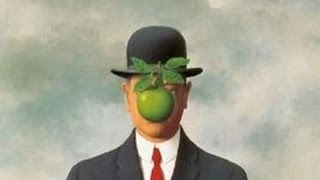

Courgette & Gammon Pasta

Recipe (makes 4-5 portions)
Ingredients
- Two smoked gammon steaks
- Three red onions
- Three courgettes
- 500g dried farfalle pasta
- Dried parsley
- Olive oil
- 750g tub of creme fraiche
- Rock salt
Let's do it:
- Chop the courgettes into medium-thin slices and dice the onions
- Chop up the gammon steaks into small cubes aprox. 2.5cm by 2.5cm
- In one frying pan, put the onions and fry in olive oil on medium heat until the colour begins to change
- Then put the courgettes in with the onions and add some salt, meanwhile, bring a pot of salted water to the boil
- Fry the gammon in a separate frying pan until the fat boils off, add some salt and pepper
- In the meantime, add the pasta to the water for c.10 minutes, and keep stirring the courgettes and onions until the courgettes begin to shrink and slightly bronze
- Drain the pasta when cooked
- Take everything off the heat and combine in one pot
- Add the creme fraiche, a large sprinkle of parsley, and stir
Enjoy!
Return home